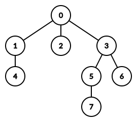
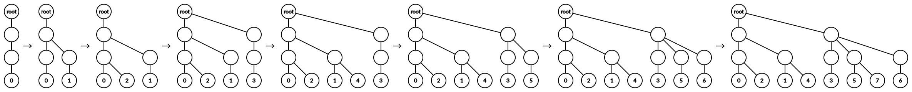
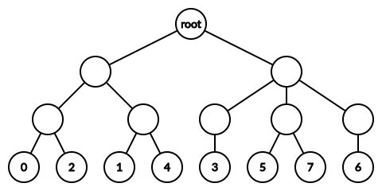

求满足如下条件的序列 $N$ 元组 $\left( A_0, A_1 \cdots A_N \right)$ 的数量：
对于 $\forall 0 \leq i \leq N$，$A_i$ 的长度为 $i$，每个元素为 $1 \sim K$ 中的整数。
对于 $\forall 1 \leq i \leq N$，$A_{i-1}$ 是 $A_i$ 的子序列。
对于 $\forall 1 \leq i \leq N$，$A_i$ 的字典序大于 $A_{i-1}$。
共一行，包含三个正整数 $N, K, M$ ($1 \leq N, K \leq 300; 2 \leq M \leq 10^9$)，分别表示序列的个数，序列中元素的取值范围以及 (答案的) 模数。
输出一行一个整数，表示序列 $N$ 元组的数量模 $M$ 的结果。
由条件容易推得，$A_i$ 就相当于在 $A_{i-1}$ 中添加一个元素，并且要求得到的字典序比 $A_{i-1}$ 大。整个过程从 $A_0 = \left[ \, \right]$ 开始。
首先，我们注意到最终序列的数量并不等于添加的方案：因为有可能有 $R$ 个连续的数相等，此时如果添加一个与它们相等的数，那么有 $R + 1$ 种方案是相同的。
为了避免这种情况，我们规定：对于一个极长相同的连续段，设它的值为 $v$ (即 $A = \left[ \cdots, u, v, v, v, \cdots, v, v, \color {blue} {\hat{}} w, \cdots \right]$)，如果要添加 $v$，只能添加到蓝色 的 $\color {blue} {\hat{}}$ 位置上。
现在我们来考虑怎么样添加元素，才能使 $A_i$ (的字典序) 大于 $A_{i-1}$。
设原来的序列为 $A_{i-1} = \left[ \cdots, b_2, b_1, b_0, c_0, c_1, c_2, \cdots \right]$，我们在 $b_0$ 和 $c_0$ 中间插入 $v$。由假设，$v \neq c_0$。
于是欲使 $A_i > A_{i-1}$ 也就是说需要使 $\color {red} {v > c_0}$ 才可以。
当然，这里有一个小小的问题，就是 $c_0$ 可以不存在。此时，$A_{i-1} \sqsubset A_i$ ($A_{i-1}$ 是 $A_i$ 的前缀)，从而 $A_{i-1} < A_i$ 恒成立。为了避免讨论，我们在每个序列的末尾加一个 $0$，即 $A_0 = \left[ 0 \right], \cdots, A_N = \left[ a_1, a_2, \cdots, a_n, 0 \right]$。
因此，我们设第 $i$ 次加入的数为 $t_i$ (特别地，$t_0 = 0$)，那么，对于每个 $i$，我们都能找到这样一个 $t_i$ 的插入位置 (即插入后 $t_i$ 的后继)，记为 $t_{pre_i}$，于是刚才的性质告诉我们 $\color {red} {i > pre_i \wedge t_i > t_{pre_i}}$。
于是现在问题转化成了：
有 $n$ 个数 $1, 2, \cdots, N$，我们要为每个数指定一个权值 $t_i \in \left[ 1, K \right]$，特别地，规定 $t_0 = 0$。
然后，我们的对每个 $i$ 需要对应一个 $pre_i$，满足 $pre_i < i \wedge t_{pre_i} < t_i$。求 $\left( t \left[ \, \right], pre \left[ \, \right] \right)$ 的方案数。
容易证明，这个对应的确是一个一一对应。比如：对于序列组 (不妨假设 $K = 3$) $\left( \left[ \color {fuchsia} 2 \right], \left[ 2, \color {fuchsia} 3 \right], \left[ 2, 3, \color {fuchsia} 1 \right], \left[ \color {fuchsia} 3, 2, 3, 1 \right], \left[ 3, 2, 3, \color {fuchsia} 2, 1 \right], \left[ 3, 2, 3, 2, \color {fuchsia} 2, 1 \right], \left[ 3, 2, 3, \color {fuchsia} 3, 2, 2, 1 \right] \right)$ 来说，有 $t = \left( 2, 3, 1, 3, 2, 2, 3 \right), pre = \left( 0, 0, 0, 1, 3, 3, 5 \right)$，读者可以自行验证。
听说这可以树形 DP，不过懒得 DP 了，树形 DP 的题解已经烂大街了，下面给出一种更加优美的做法。
对于 $pre_i$ 数组，由于 $pre_i < i$，因此如果把 $\left( i, pre_i \right)$ 看成边，可以得到一个以 $0$ 为根的树形结构，如下图：
那 $t$ 数组又该如何处理呢？
下面我们给出一种神奇的方法。
注意到 $t_i \in \left[ 1, K \right]$ 的上界是确定的，因此我们可以尝试把每个顶点的深度都设为 $K$。
这样一来，所有点深度都相同，就不可能是祖先关系了，那又该如何体现 $pre$ 呢？
首先，对于根节点 ($0$ 号点)，由于它的深度为 $K$，因此我们预先放一条长度为 $K$ 的链，一端为根 $r$，一端为 $0$。
然后，考虑从小到大加入点，对于点 $i$，先找到点 $pre_i$ (由于 $pre_i < i$，因此已经被加入了)，然后找到 $r$ 到 $pre_i$ 的链，它的长度为 $K$。
接着，我们找到这条链上深度为 $t_i - 1$ 的点 $v$ (由于 $t_i \in \left[ 0, K - 1 \right]$，因此 $v$ 存在且 $v \neq pre_i$)，然后从 $pre_i$ 开始产生新的分支 (加叶子)，直到深度补齐到 $t_i$。
最终，就能得到一个恰有 $N + 1$ 个叶节点，每个叶节点深度为 $K$ 的树。
如果对这个过程不理解，可以看下图来加深理解：
可以发现，在这种构造中，对于每个点 $i$，它可以得到一段 "属于自己的" 深度从 $t_i - 1$ 到 $K$ 的链。
因而，在过程中的第 3 步，在链上找点的时候，由于 $t_i > t_{pre_i}$，因此这个分叉点 $v$ (即 $i$ 和 $pre_i$ 的 LCA)，一定是 "属于 $pre_i$ 的" (即可以从图中直接 "读" 出来 $pre_i$ 是多少)，而不会 "产生歧义"，从而达到了上面「体现 $pre$」的要求。
最终我们得到的树就是一个类似于 Huffman 树 (但不一定是二叉树) 的结构：所有 $N + 1$ 个叶子的深度都相等，然后每一层选择若干个叶节点进行 "合并"，$K$ 层以后就只有一个根。可以证明，这又是一个一一对应。
将上图画的均衡一点，就长这样：
那，这样的树又该怎么数呢？生成函数啊！带标号？指数生成函数！
我们用 $F_K \left( x \right)$ 来表示 (叶节点) 深度为 $K$ 的树的数量 (的指数生成函数)，即 $n ! \left[ x^n \right] F_K \left( x \right)$ 表示深度为 $K$ 的包含 $n$ 个叶节点的树的数量。
首先显然有 $F_1 \left( x \right) = \mathrm e^x - 1$。
考虑 $F_{k+1} \left( x \right)$ ($k > 0$)，可以看成若干个深度为 $k$ 的树的带标号无序组合，于是只需要 $\exp$ 一下就可以了，再去除一棵空树，就得到了赏心悦目的递推式：$$ \large \color {fuchsia} {F_{k+1} \left( x \right) = \mathrm e^{F_k \left( x \right)} - 1} $$ (手动鼓掌)
于是我们只需要做 $K - 1$ 轮 (或 $K$ 轮) $\exp$，最后再取 $x^{N + 1}$ 项系数就可以了。
做一次 $\exp$ 的时间复杂度为 $O \left( N^2 \right)$ (或 $O \left( N \log N \right)$)，因此总时间复杂度为 $O \left( N^2 K \right)$，和大家都一样。
最后说一下 $\exp$ 如何处理阶乘分母的问题：由于模数并不一定是素数，因此多项式无法直接存储，我们不如存储生成函数对应的序列，即带上阶乘的结果，卷积时带上二项式系数 $\dbinom nr$ 就可以了 (二项式系数可以使用杨辉三角预处理)。
#include <bits/stdc++.h>
typedef long long ll;
const int N = 354;
int mod;
int n, R;
int C[N][N];
int f[N], B1[N];
inline void add(int &x, const int y) {x += y - mod, x += x >> 31 & mod;}
void init(int n) {
int i, j;
for (*C[0] = i = 1; i <= n; ++i)
for (*C[i] = j = 1; j <= n; ++j)
add(C[i][j] = C[i - 1][j], C[i - 1][j - 1]);
}
void Exp(int *a) {
int i, j; memcpy(B1, a, n << 2);
for (i = 0; i <= n; ++i)
for (j = 0; j < i; ++j)
a[i] = (a[i] + (ll)B1[j] * a[i - j - 1] % mod * C[i][j]) % mod;
}
int main() {
scanf("%d%d%d", &n, &R, &mod), init(++n);
for (std::fill(f, f + n, 1); --R; Exp(f));
return printf("%d\n", f[--n]), 0;
}
坑1：注意 $\exp$ 卷积时不要漏项了，以及最后输出是 $x^{N + 1}$ 项系数而不是 $x^N$ 项 (上面的代码使用 $x^N$ 项是因为所有数组存储的都是 $\dfrac {F_K \left( x \right)} x$ 的结果)。